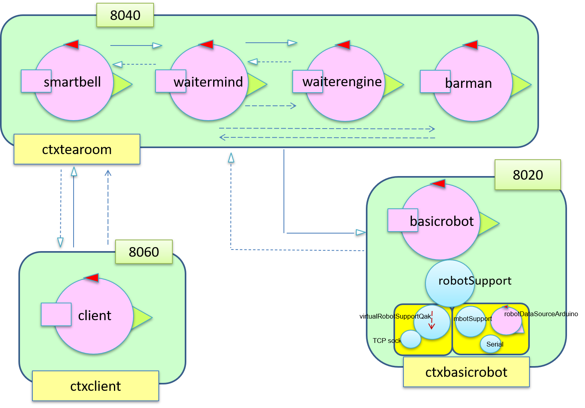

Dall'analisi dei requisiti si evince che il
waiter sia:
- proattivo: capace di intraprendere task di propria iniziativa;
- reattivo: reagire agli stimoli esterni.
Osservando la tabella dei task si può notare come l'esecuzione di un qualsiasi task è una combinazione di azioni appartenenti a 3 categorie: invio di un messaggio, movimento nella
tearoom, interazione con oggetti della
tearoom (come prendere il drink o pulire un tavolo, vengono simulate con un delay).
Inoltre
waiter deve essere in grado di eseguire un task e ascoltare nuovi messaggi contemporaneamente.
Questo bisogno ci spinge a suddividerlo in parti (
divide et impera):
- una prima parte, a cui pensiamo come un engine, che gestisca il movimento del robot e la pulizia dei table
- una seconda parte, a cui pensiamo come un mind, che comunichi con le altre entità e comandi la prima parte
Quindi sostituiamo l'attore
waiter introdotto nell'analisi dei requisiti con due nuovi attori,
waitermind e
waiterengine. Possiamo dire che
waitermind mantenga la logica d'esecuzione di
waiter mentre
waiterengine compie le azioni che si ripercuotono sulla
tearoom.
Rispetto al modello dell'analisi dei requisiti dobbiamo ora aggiungere dei messaggi che consentino la comunicazione tra
waitermind e
waiterengine
| nome messaggio |
QAK |
motivazione/scelta |
mittente-destinatario |
parametri |
| clean |
Dispatch |
Comando per iniziare a pulire. |
waitermind-waiterengine |
tipo di pulizia |
| doneCleanRun |
Dispatch |
Indica la terminazione del processo di pulizia |
waiterengine-waitermind |
|
| engineReady |
Dispatch |
Indica che waiterengine è pronto a ricevere comandi. Usato all'avvio. |
waiterengine-waitermind |
|
| end |
Dispatch |
Indica che il destinatario deve terminare. Questo messaggio viene riutilizzato anche per indicare la terminazione agli altri attori. |
waitermind-waiterengine |
|
Si noti come clean e doneCleanRun avrebbero potuto essere modellati come Request-Reply, tuttavia se il task clean dovesse essere interrotto dovremmo gestire più di una Reply. Quindi l'uso di due Dispatch semplifica la gestione di questi messaggi. Sebbene le nostre assunzioni escludano interruzioni scegliamo di implementare questi messaggi come Dispatch già da ora.
Il problema legato alla pulizia del tavolo è stato discusso nell'analisi del problema dello sprint precedente.
Parlando di movimento del
waiter emerge la necessità di conoscere la posizione delle entità nella
tearoom e di avere un sistema di navigazione che permetta il movimento da un punto A a un punto B.
Per fortuna una
software house entra in nostro aiuto e ci fornisce un tool pronto all'uso: si veda
it.unibo.planner20.
Questo comporta l'introduzione di una
mappa che dovrà essere gestita da un componente.
La mappa viene divisa in celle e chiamiamo con il termine
step l'unità dello spostamento del
waiter da una cella ad un'altra adiacente corrispondente alla lunghezza del robot.
I veri spostamenti vengono effettuati dal
basicrobot: il
mind chiede uno spostamento all'
engine che a sua volta inoltra la richiesta al basicrobot.
Introduciamo quindi altri due messaggi affinché
waitermind possa comandare lo spostamento a
waiterengine
| nome messaggio |
QAK |
motivazione/scelta |
mittente-destinatario |
parametri |
| moveTo |
Request |
Usato per richiedere un movimento |
waitermind-waiterengine |
Coordinate X e Y del punto di arrivo |
| done |
Reply |
Conferma di movimento effettuato |
waiterengine-waitermind |
Coordinate X e Y del punto di arrivo |
waiterengine comunica con
basicrobot usando i classici messaggi
step,
cmd,
stepdone,
stepfail
Vediamo ora, da un punto di
vista logico, il sistema nel suo complesso.

Proseguiamo con la modellazione dei due attori che compongono il
waiter tramite grafi degli stati.
Waitermind:
waitermind è praticamente uguale al
waiter dell'analisi dei requisiti. Cambiano solo i messaggi che provocano le transizioni dagli stati di movimento: queste transizioni sono triggherate non più da un
goto bensì da un messaggio
done. Lo stesso discorso vale per le transizioni tra gli stati di pulizia del tavolo, triggherate da
doneCleanRun
Waiterengine:
Gli stati
readStep,
errorHandler e
updateMap effettuano transizioni diverse a seconda del risultato (boolean) della verifica se ci sono altri step da fare. Nel grafo queste transizioni hanno label racchiuse in parentesi quadre.
Infine mostriamo un
modello di questo scenario semplificato sfruttando un
robot virtuale per la visualizzazione del robot.
tearoom.qak client.qak